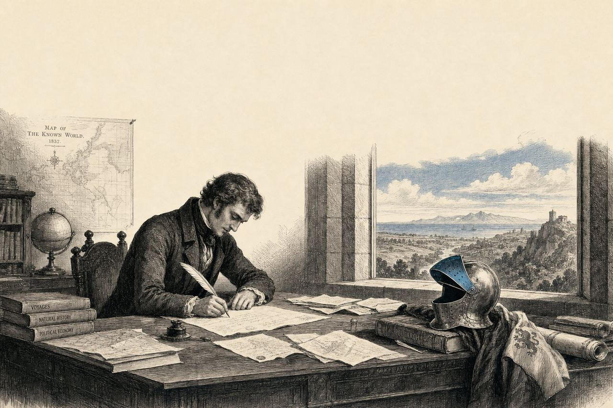

Een uitvinder die ook over democratie schrijft — dat klinkt vreemd, tot u inziet dat het allemaal hetzelfde is.
Door Jacobus van Merksteijn · 8 min lezen · 23 mei 2026

Mensen vragen mij vaak hoe iemand zoveel verschillende dingen tegelijk kan doen. Coatings ontwerpen voor scheepsrompen, een fusiereactor schetsen, een nieuw natuurkundig model uitwerken, schrijven over democratie en onderwijs.
Alsof het toeval is dat één hoofd dat allemaal vasthoudt.
Omdat het allemaal hetzelfde is. Wie de stroming van water rond een scheepsromp begrijpt, begrijpt ook waarom een samenleving stagneert.
Wie ziet dat een molecuul zich gedraagt als een botsende knikker, ziet ook waarom een schoolsysteem dat enkel telt en niet weegt, op den duur leegloopt.
Verbanden zien tussen dingen die anderen los van elkaar bekijken — dát is wat ik intelligentie noem.
Omdat de bestaande media die verbanden niet leggen.
Elke maand verschijnt er een editie met een handvol artikelen die rondom één rode draad zijn gegroepeerd. Coatings, biomassa, fusie, het 7D-model. Politiek, onderwijs, economie.
Geen verborgen agenda. Gratis, voor altijd. Geen tracking, geen verkoop van uw gegevens. Opzeggen kan met één klik onderaan elke editie.
Reageer, spreek tegen, vraag door. AI helpt mij om de discussie zinvol te houden — spam eruit, samenvattingen erin. Ik lees en antwoord zelf, maar de filters doen het zware werk.
Omdat ik wil dat we elkaar in de ogen kunnen kijken bij wat we beweren. Niet anoniem, niet uit de heupschoot, niet met achteruitkijkspiegel. Open, met argument, met respect voor wie het beter weet.
"Wie alleen binnen de muren van zijn vakgebied denkt, is geen wetenschapper maar een ambtenaar van het bekende."
Welkom in editie één. Laten we beginnen.
Verbanden zien tussen dingen die anderen los van elkaar bekijken — dát is wat intelligentie betekent.
Mensen vragen mij hoe iemand zoveel verschillende dingen tegelijk kan doen: coatings ontwerpen, een fusiereactor schetsen, schrijven over democratie en onderwijs. Mijn antwoord is altijd hetzelfde: omdat het allemaal hetzelfde is. Wie de stroming van water rond een scheepsromp begrijpt, begrijpt ook waarom een samenleving stagneert.
De bestaande media leggen die verbanden niet. Een wetenschapsredacteur schrijft over kernfusie. Een politiek redacteur over verkiezingen. Geen van hen stelt de vraag of een fusiereactor en een schoolsysteem niet aan dezelfde wet gehoorzamen. In deze krant probeer ik dat wel te doen — in gewone taal, open voor tegenspraak.
Het Open Vizier verschijnt maandelijks, gratis, zonder reclame, zonder partijkleur. Elke editie bundelt een handvol artikelen rondom één rode draad. Discussie staat open onder elk stuk. U kunt opzeggen met één klik.
Omdat wij elkaar in de ogen kunnen kijken bij wat we beweren. Niet anoniem, niet uit de heupschoot. Open, met argument, met respect voor wie het beter weet. „Wie alleen binnen de muren van zijn vakgebied denkt, is geen wetenschapper maar een ambtenaar van het bekende."
Wat is het onderwerp uit deze krant dat u het meest aanspreekt? En waar zou u over willen meeschrijven?